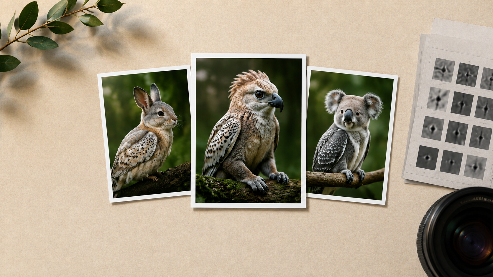

Hybrid Image Classification
Facilitating interdisciplinary AI/neuroscience research in the task of hybrid image recognition
Story Behind the Project
As second-semester Masters students at Georgia Tech, my batchmate and I were looking for grad researcher opportunities to put our ML skills to work on something meaningful. We ended up in Dr. Dobromir Rahnev's Computations of Subjective Perception Lab — a lab asking one of the most fascinating questions in cognitive science: how does the brain construct what we see?
Our work sat within the lab's research thread on deep neural networks and human vision — investigating the similarities and divergences between artificial neural networks and human visual perception, and using DNNs as a lens to better understand how the brain processes what it sees. We brought our ML expertise to that interdisciplinary space, designing and evaluating hybrid architectures that fused the local feature sensitivity of CNNs with the global context modeling of transformers.
About
Deep neural networks have revolutionized computer vision, but they diverge from human vision in important ways — particularly in how they are trained and how they generalize. This project explored hybrid CNN-transformer architectures as a tool for both improving artificial vision systems and gaining insight into human visual cognition, contributing to the broader question of how biological and artificial visual systems relate to one another.
My Role
Graduate researcher in collaboration with a batchmate, working under Dr. Rahnev at Georgia Tech's Computations of Subjective Perception Lab. My contributions spanned the full research pipeline:
- Literature review on hybrid image perception and deep neural network architectures
- Constructed a dataset of 100 hybrid animal images — sourcing existing hybrid images and generating new ones where needed
- Designed and deployed a human participant study via Google Forms, including participant recruitment
- Synthesized and analyzed human response data from the study
- Ran optimized deep CNN architectures (VGG-16/19, ResNet50, InceptionResNetV2) on the same hybrid animal identification tasks
- Analyzed neural network responses and conducted a comparative study between human and model performance
- Reported on findings from the comparative analysis
Key Details
- Custom dataset of 100 hybrid animal images used as the shared stimulus set for both human and model evaluation
- Human responses collected via a structured survey; results synthesized and analyzed for patterns in hybrid animal perception
- CNN architectures evaluated: VGG-16, VGG-19, ResNet50, InceptionResNetV2
- Comparative analysis between human and neural network performance on the same identification tasks
Impact
This work contributed empirical data and analysis to Dr. Rahnev's lab's ongoing investigation into the relationship between deep neural networks and human visual perception — one of the open questions at the intersection of AI and cognitive neuroscience. By running the same hybrid image identification tasks on both human participants and optimized CNN architectures, the study added to the body of evidence the lab uses to understand where artificial and biological vision systems converge and diverge.